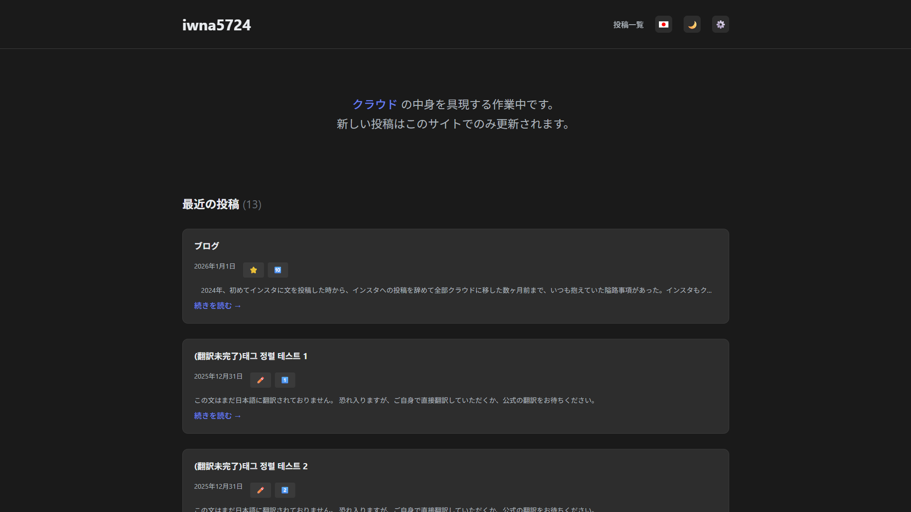
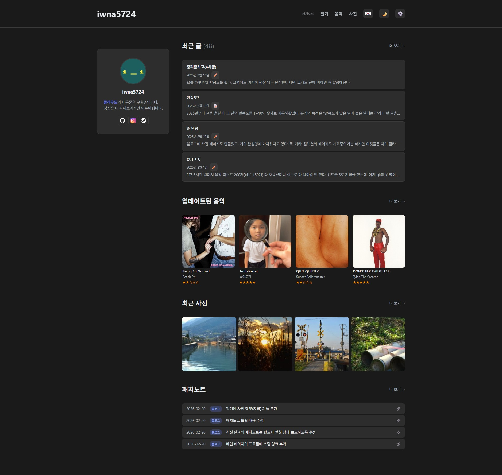

격변
어제와 오늘에 걸쳐, 홈페이지와 패치노트에 대한 작업을 했다. 패치노트는 기존의 클라우드에 기록하던 것과 비슷한 형식을 자동으로 기록해주는 페이지다. 이것저것 버그가 너무 많아서 꽤나 힘들었다. 블로그를 만든 이후로는 깃허브의 Actions에 커밋 기록이 자동으로 남게 되었기 때문에 따로 패치노트를 작성하지는 않았지만, 그래도 접근성의 측면에서 패치노트를 블로그 내에 표시하는 것은 꽤 좋은 일이라고 생각한다.
홈페이지와 패치노트를 구현함에 있어 보다 더 힘들었던 것은 패치노트에 대한 페이지지만, 솔직히 개인적으로 더욱 만족스러운 것은 홈페이지에 대한 것이다. 지금까지의 홈페이지는 아래의 사진처럼 최근 글 외에는 아무런 컨텐츠도 표시하지 않았었다.

하지만 이제는 나의 프로필과 더불어, 각종 페이지의 컨텐츠도 표시하도록 수정했다.
이렇게! (참고로, 이 스크린샷을 보여주기 위해서 블로그에 사진 첨부 기능을 새롭게 추가했다. 01/01의 글에서 업로드한 페페 짤도 원래는 온라인의 URL에서 가져왔던 거라 해당 URL이 변경되면 사진도 표시되지 않았지만, 이제 직접 업로드가 가능해졌기 때문에, 사진이 깨질 걱정도 사라졌다.)최근 글의 카드는 크기를 줄이고, 표시 개수도 10개에서 4개로 줄였다. 업데이트된 음악에는 가장 최근에 업로드하거나 수정한 앨범들을 표시하도록 하였고, 최근 사진도 표시하도록 했다. 음악과 사진은 썸네일을 클릭하면 해당 페이지로 이동하여, 클릭한 앨범/사진의 모달도 자동으로 표시된다. 앞서 언급한 패치노트도 추가했다.
이제야 홈페이지다운 홈페이지가 되었고, 블로그다운 블로그가 된 듯한 느낌이다. 나날이 완성도가 높아지는 느낌이라 정말 기분이 좋다. 인스타그램에 글을 올리거나 클라우드에 업로드하는 방식을 탈피하지 않았더라면 이러한 기쁨도 누릴 수 없었을 것이다. 나는 도망친 게 아니라, 목적지로 향하는 "경로"를 바꾼 것 뿐이었다. 이제는 확신할 수 있다.